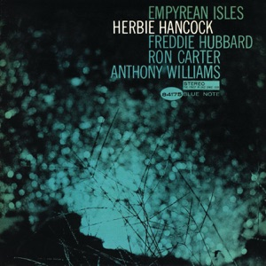

The trend I follow
Five Deals, Six Weeks, and a Sevenfold Spread

Here is a thing that happened this summer, and I have not been able to stop turning it over.
In about six weeks, five companies that all essentially sell you a bottle of pills changed hands. Procter & Gamble paid a reported $3.8 billion for Thorne, which is roughly 5.8 times next year’s revenue. Four weeks later Nestlé sold seven vitamin brands doing $1.2 billion of sales for $1 billion, which is about 0.8 times.
What I keep returning to is that these were the same aisle, and in some stores genuinely the same shelf, and yet the price a buyer proved willing to pay for a foot of it varied by a factor of seven.
My first instinct was that somebody had got it wrong, because that is everyone’s first instinct and it is almost always the wrong one. Nobody at that size makes a seven-times error in public, twice, four weeks apart. So the more interesting question is what the two buyers thought they were buying, and whether it was the same thing at all. (It was not.)
The six weeks, in order
| Date | Buyer / target | Value | Basis |
|---|---|---|---|
| 24 Jul | Bain Capital / Vitabiotics | ~$1.2bn reported | no public revenue |
| 4 Aug | P&G / Thorne | $3.8bn reported | ~5.8x 2026E |
| 6 Aug | Kirin / Jamieson Wellness | C$2.5bn EV | 27% premium |
| 1 Sep | Yellow Wood / Nestlé VMS | $1.0bn | ~0.8x 2025 |
| 2 Sep | cbdMD / Twinlab | undisclosed | n/a |
Thorne and Vitabiotics values are trade-press reported, not confirmed by the parties. Vitabiotics publishes no revenue, so there is no multiple here rather than a guessed one. Two 2025 comparables sit alongside: Celsius / Alani Nu and PepsiCo / poppi.
Three things get bought in this aisle
Trust is what a clinician will put their own name behind. Audience is who already listens to you before you have sold them anything. Distribution is shelf space, freight, a factory, and all the deeply unglamorous machinery that gets a bottle into a hand. Nobody buys only one. But the price tells you which one they came for.
Trust what a professional vouches forAudience who already listensDistribution shelf, freight, factory
The tell is the seller, not the buyer
This is the part I find genuinely delightful, and I want to be clear that I mean delightful.
Nestlé did not leave the supplement business. It kept Solgar. It kept Pure Encapsulations. Those are its two science-led, practitioner-facing brands, and it sold the seven that compete on price and placement, and its chief executive said, in the flat language these announcements are always written in, that the company is focusing where it has the strongest competitive advantage.
Which is a very polite way of saying: these two things are not the same business and we have stopped pretending they are.
A seller sorted its own cupboard along exactly the line the market had drawn four weeks earlier, in public, with a billion dollars.
You do not often get confirmation that clean. Usually you have to wait years and squint.
What I think happens next
Supplements spent about forty years as a commodity business. Fill a bottle, buy shelf position, compete on price, win on distribution because there was nothing else to win on. The product was never really the product. The placement was.
What repriced this summer is not the pills. It is proof. And my read, which I will hold loosely because five deals is a cluster and not a dataset, is that the next decade in this category belongs to whoever can substantiate a claim rather than whoever can fill a shelf.
The moat will not be formulation. Formulation is copyable in a quarter and private label copies it for less, cheerfully, forever. The moat is third-party testing plus practitioner distribution, because a competitor can match your ingredient panel and cannot match a doctor saying your name out loud to a patient who is frightened.
And where I would be wrong
Every acquirer on that list has world-class distribution, and every one of them is going to be sorely tempted to use it. Putting a clinic brand into every store in America is precisely how you spend the thing you just paid six times revenue for. Trust erodes slowly and invisibly and does not appear in a quarterly number until well after it is gone.
There is also a decent chance I am reading a cycle as a structural shift, which is the classic error and I would rather name it than have it named for me. Rate cuts and a stalled IPO market push sponsors toward strategic exits regardless of anything anyone believes about trust.
So the thing I will actually be watching is small and checkable: whether Thorne is still sold through practitioners in three years, and at what share of revenue. One line. It will tell you whether P&G understood what it bought.
Why I actually care about this
I should disclose something, which is that I am not a neutral observer of this aisle. I am a customer standing in it.
Fifteen things, every day. I did not assemble that list casually. I read the mechanism on each one before it went in, and I get bloodwork drawn to check whether any of it is actually doing what it claims.
Here is what unsettled me once I started the deal research. Almost every bottle on that list is made by a company that has just been bought, or just been sold, by one of the parties in the notes above. Thorne. Nestlé. The names in my analysis turned out to be the names in my cupboard.
It is not the car. It is the driver.
That is when this stopped being an argument and became a personal question. If the whole premise is that what I am paying for is trust, third-party testing and a formulation somebody staked a reputation on, then the thing I care about is not the product at all. It is who is responsible for it now.
A bottle does not change the day the cap table does. Same label, same powder, same price for a while. What changes is who decides, two years from now, whether the third-party testing is still worth what it costs, and whether the practitioner channel is worth defending when a mass retailer walks in with a larger number.
Which means I will find out whether I was right before most people do. It will show up on my own shelf.
The notes
 Celsius / Alani Nu<3x2024A revenue
Celsius / Alani Nu<3x2024A revenue PepsiCo / poppi$1.65bnnet of tax benefitsBain / Vitabiotics~$1.2bnno public revenueYellow Wood / Nestlé0.8x2025 sales
PepsiCo / poppi$1.65bnnet of tax benefitsBain / Vitabiotics~$1.2bnno public revenueYellow Wood / Nestlé0.8x2025 salesIf you cover consumer and think I have this backwards, that is the email I most want to get. fyruan@usc.edu